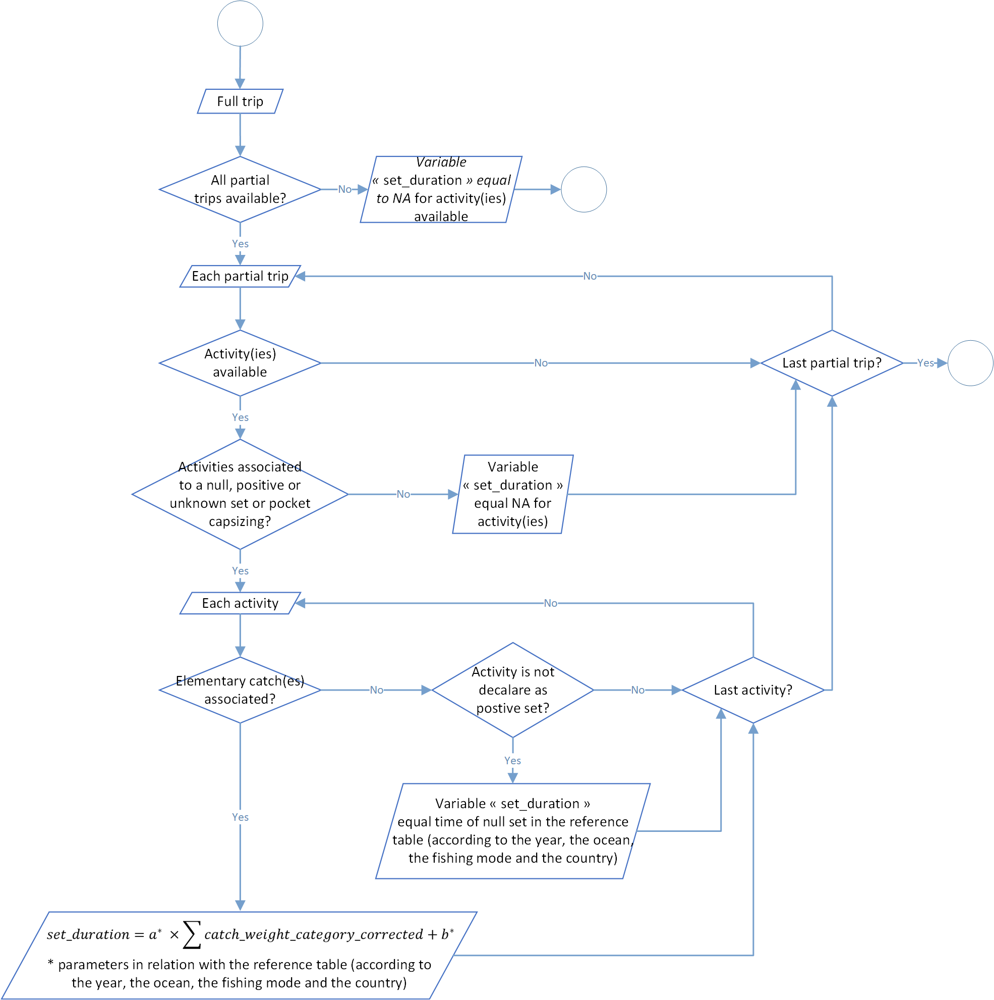
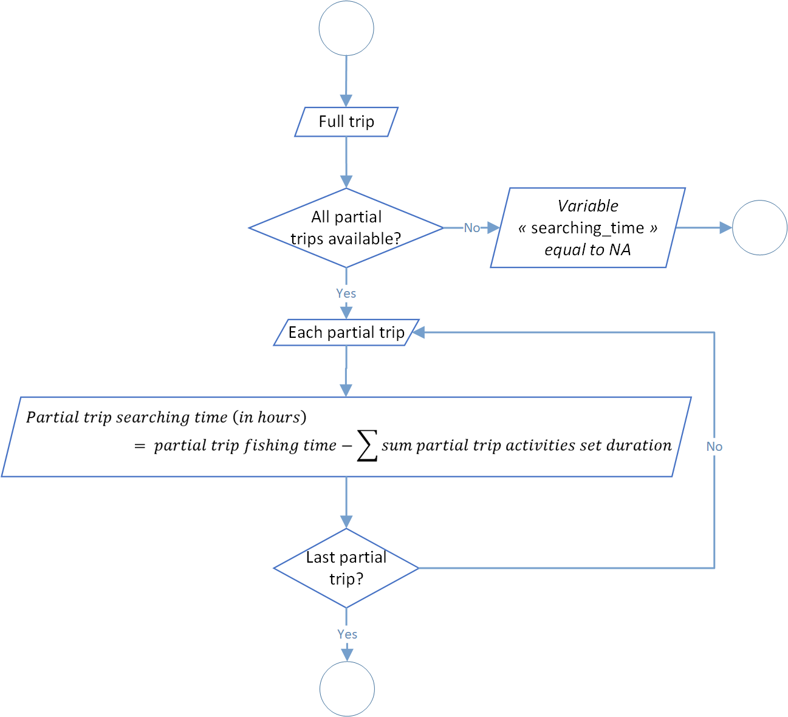

Logbooks standardisation
The first level of the t3 process aim to standardize logbook data. These standardization was divided into 8 steps:
| Process | Code/method associated | Class(es) associated | Observations |
|---|---|---|---|
| Process 1.1: raising Factor level 1 | rf1() |
full_trips | |
| Process 1.2: raising Factor level 2 | rf2() |
full_trips | |
| Process 1.3: logbook weigth categories conversion | conversion_weigth_category() |
full_trips | |
| Process 1.4: postive sets count | set_count() |
full_trips | |
| Process 1.5: set duration calculation | set_duration() |
full_trips | In hours |
| Process 1.6: time at sea calculation | time_at_sea() |
full_trips | In hours |
| Process 1.7: fishing time calculation | fishing_time() |
full_trips | In hours |
| Process 1.8: searching time calculation | searching_time() |
full_trips | In hours |
Process 1.1: raising Factor level 1
Catches filled in logbooks are based on visual estimations when they rise from the purse senner salabarde. This is the only technical way available at this moment to have an estimation by species. Thereafter, catches will be stored in one or several wells. During the landing process, well catches will be weighed, generally through a peson located under the unloading crane. By move from set to well(s) we lost the exact information about catch location.
Regarding this process, for each full trip (one full trip should be composed of one or several partial trip, for example if the vessel unloads a part of theses wells and go back to sea with not empty well(s)) we will calculate a raising factor, ratio of landing weight on catches weight. Furthermore, if a full trRf1 value are normally between 0.8 and 1.2 and values out of range should be investigated for quality control. This range could be modified through function parameter rf1_lowest_limit (by default at 0.8) and rf1_highest_limit (by default at 1.2). In addition, you will in the function log a warning if the rf1 value is out of range. This ratio will be applied on logbook catches (associated with the full trip) to adjust declared values (by rising or lower them).
By aware that for know, even if a rf1 value are out of user range, it will be apply anyway on the logbook catches associated. It’s up to the user to check the log file and correct (if necessary) values associated before switch to the next process.
Furthermore, not all the well species are weighted during the landing process. Only several tunas species are purchased (and weighted by association). In addition, theses species should be different for each fleet, especially because canneries don’t purchased through the same rules according to the each fleet. This raising factor will be estimate only on theses species. Species list could be modify through the function parameter species_rf1. For now theses following selections were validated since several years:
for French (French and Mayotte fleets), use codes 1 (Thunnus albacares), 2 (Katsuwonus pelamis), 3 (Thunnus obesus), 4 (Thunnus alalunga), 9 (mix of tunas species) and 11 (Thunnus tonggol).
for Spain (Spanish and Seychelles fleets), use codes 1 (Thunnus albacares), 2 (Katsuwonus pelamis), 3 (Thunnus obesus), 4 (Thunnus alalunga), 5 (Euthynnus alletteratus), 6 (Auxis thazard), 9 (mix of tunas species) and 11 (Thunnus tonggol).
In addition, if logbook(s) are missing we can’t apply the process. In that case, we will tried to apply the process of raising factor level 2 (see below in the next function).
By the way, there are several cases when the rf1 can’t be calculated. Take a look to the diagram below to have a brief overview of the process. You could notify that the structure of the process should be strange in terms of informatics efficiency (for example with repetitions of some steps, not necessarily on the first look). This is perfectly normal because we think about the potential improvement of the process in the future and we let the field open for an easier implementation.

Process 1.2: raising Factor level 2
This process is useful for historical data, especially when logbooks trips were not collected or available. In theses cases, don’t apply the RF2 mean a under-estimation of catches due to the missing logbooks. Like in the process 1.1, we made the hypotesis that all the landings were known and available.
Information: due to time constraints, this process is partially implemented in the source code. The figure below, after the methodology explication, display what is currently operational.

Process 1.3: logbook weigth categories conversion
Process 1.4: postive sets count

Process 1.5: set duration calculation

Process 1.6: time at sea estimation

level 1.7: fishing time determination

level 1.8: searching time process
